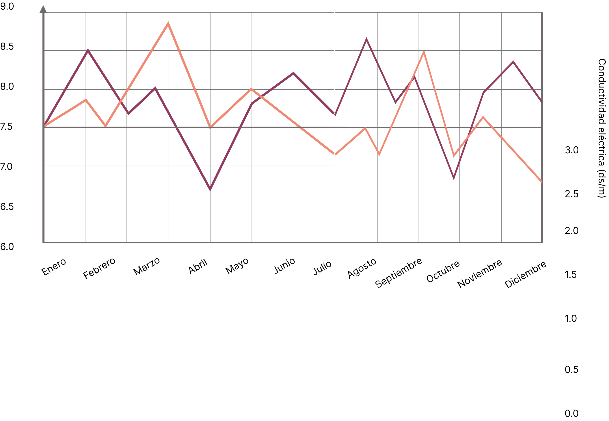

Somos un equipo centrado en el estudio y la divulgación de la relación entre el cultivo de la naranja y la calidad del aire en Valencia. Nuestro objetivo es acercar datos e información de forma clara para entender cómo el entorno influye directamente en uno de los cultivos más representativos de nuestra tierra.

Para analizar la relación entre la calidad del aire y el cultivo de naranjas en Valencia, utilizamos datos
abiertos proporcionados por el propio ayuntamiento.
A través de la plataforma de Ajuntament de València, accedemos a una API pública que nos permite obtener
información actualizada sobre distintos indicadores de calidad del aire en la ciudad.
Una vez recogidos los datos, los procesamos y los transformamos en visualizaciones sencillas y fáciles de
entender.
En nuestra web, estos datos se representan principalmente mediante gráficos tipo gauge (indicadores visuales)
y gráficos de líneas, que permiten observar la evolución de la calidad del aire a lo largo del tiempo.
De esta forma, convertimos datos técnicos en información accesible, ayudando a identificar qué zonas presentan mejores condiciones para el cultivo de naranjas y facilitando su interpretación para cualquier usuario.